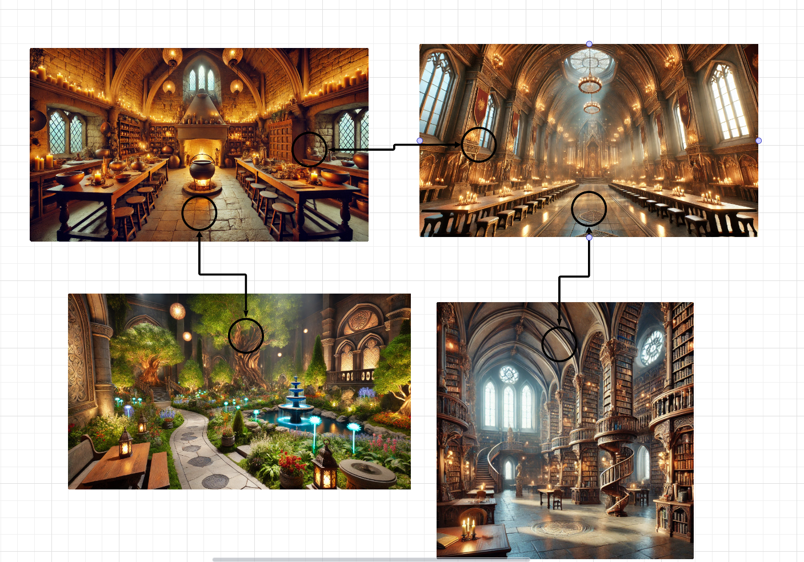

Showcasing my growth, achievements, and eductional journey
I have been working professionally in the IT field for just about the last decade. Prior to starting my path towards earning my bachelor's in computer science, I considered myself to be technical in nature. I was and still am a person who likes to understand how things work at a fundamental level. Throughout my time here at SNHU, I have had the opportunity to dive into numerous areas of IT that I may have otherwise never seen while in my current career path. I also consider myself to be a technically flexible person by nature. Meaning, I can draw similarities between technological domains, which lead me to be a quick learner. For example, prior to starting my introduction to Python course, most of my scripting experience was either in Powershell or C++. Since I was already familiar with the core concepts, I was able to pick up the syntax fairly easy and hit the ground running. Throughout many courses in this program, we are usually given projects that are setup to fit into real world scenarios for mock companies. We are given backstories; user stories and requirements that help us identify which role we need to fulfill in order to create a specific deliverable. While we are never given the opportunity to work collaboratively with anyone at any time during this program, we are still shown how a team would operate.
At the beginning of this course, I provided a code review to my instructor. This code review included my course of action for the course and which projects I was going to tackle throughout the enhancements. While I did not take this capstone course CS-499 in my final term, I finished most of my CS courses. Although I planned to use IT-140 Introduction to Scripting as the primary course. Within this course we originally worked on a text-based adventure game that allowed the student a fair bit of creativity. During the code review, I went over the previously developed code and its basic basics. I planned to keep the original Python language, however, add several graphical, algorithmic and database enhancements in order to display my mastery.
The artifact that I have chosend for this enhancement is from the course IT-140, Introduction to Scripting. It is a text-based adventure game that was a fun project where we got to use a bit of creativity when developing the original piece. We were able to add create the logic we needed in order to accomplish a user navigating between several rooms, before reaching their goal. Now I have added in a graphical element and even added the ability for the user to use their mouse when navigating. Additionally, I have tried to add more descriptive comments to not only help myself whenever I revisit this code, but also to others. I have opted to use the tkinter library, as it is very user friendly, and it was easy to begin using. This allows me to bundle png assets into the project and later display them to the user to visually show them where they are in the game. I am by no means an artist, so to quickly generate some images that fit the style of my game, I have chosen to use OpenAI to help me get some starter images. There are a few bugs currently with formatting of the images, but I hope to resolve those this week. I plan to add a few more enhancements this week as well that would include some visual clues to the player, so they have an understanding of where they should be clicking. Also, I have begun working early on some of the algorithmic pieces of the code and how player navigation will work. Due to this, the navigation piece is a little buggy, and you can currently only navigate between 3 rooms. Part of this enhancement was performing the initial development and design of not only this one, but alos the upcoming two enhancements. I think through my code review and publications to the ePortofilo I am able to effectively demonstrate the 2nd course outcome. Being an oral style presentation, my code review was an extensive overview that showcased the technical changes and implications that I was looking forward to working with throughout this course.
For this enhancement, I have chosen to keep the same artifact as in the previous enhancement. I chose to keep with the same source project for this enhancement because of the nature with the projec.t We currently can highlight unique imager, functions, features and algorithms since the whole purpose of the project would be to allow someone to enjoy it. We are not aiming for any strict technical limitations. I think during this week I have really refined the “design and evaluate computing solutions...” course outcome. This week I was able to introduce a fully functional navigational piece to my game solely based off where the user clicks. Until final release, I have left in a debugging feature that allows the user to see where clickable regions are, as seen by red rectangles. Also, I have added logic through thoroughly defined dictionaries to handle the room navigation and item pickup features. This allows the developer to easily add new rooms and opens the door for a future enhancement of adding randomly generated rooms, since room navigation is handled dynamically. Also, during this enhancement, I have included my code on my GitHub page. This allows the code I am developing to be opened to the greater computer science community, which in turn speaks to the 1st course outcome. By building collaborative environments, developers and creative minds alike can crowd source bugs and problems that would normally take a single person days, months or even years to solve. There is also the notion that after having worked with the same code base for countless hours, having a fresh set of eyes is always beneficial, in that they will most likely notice mistakes that you have been overlooking.
The database enhancement will also include the previously mentioned source project. With such a open plane for integrations, I believe a database enhancement on this project allows me to have full creative and technical abilities. For this week’s enhancement, I had included an SQLite component to my python code. This enhancement allows the user to track their high scores when playing the game. To achieve this, I have developed a timer to the game that will track how long it takes the player to complete a play through. Once the player completes the game, they will have the chance to input their name and see a list of the top ten high scores, which is stored in a small and simple database. Throughout this capstone, I challenged myself to improve my database architecture and implementation skills. I believe that course outcome 4 was shown through this enhancement, because of these implementations. A scoreboard can be easily accomplished by a simple array of strings or dictionaries. However, in the spirit of implementing computer solutions that will deliver value, through a database option here, I am keeping scaling in mind. Scaling is a large factor to consider during the desgin and architecture phase of developing software. Through its implementation here, we are allowing players to have room for any substantial number of completions of the game that they might have. In addition to this course outcome, the 5th course outcome is also set in stone during this enhancement. Throughout this capstone, I have ensured to follow all Python best coding guidelines and references for any implementations of graphics, variables, memory calls and even the database implementation. To mitigate flaws, I needed to ensure that connections were properly terminated, and unexpected actions could not occur through proper error handling.